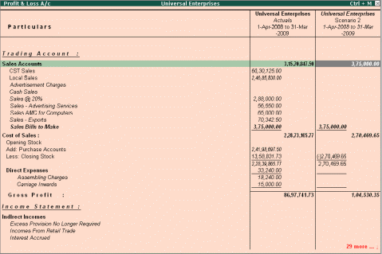

Scenario Management
To configure for Scenarios, Scenario Management is the management tool provided in Tally.ERP 9 with the help of which you can create multiple scenarios for the purpose of forecasting or to view provisional reports. This can be done by selectively including certain types of vouchers, which will in no way affect the regular books. The vouchers that are used in scenario management are
1. Optional Vouchers
2. Memorandum Vouchers
3. Reversing Journals
Go to Gateway of Tally > F11: Features > F1: Accounting Features
# Set Use Reversing Journals and Optional Vouchers to Yes
To create a Scenario:
To view Scenarios, Go to Gateway of Tally > Accounts Info. > Scenarios > Create
# Specify the name of the scenario
# Set parameter Include Actuals to Yes/No (as required)
# Set parameters relating to Exclude forex gains/loss and Exclude inventory tracking to Yes/No (as required)
# Specify the voucher types to be included/excluded (Use Exclude option only for those Voucher Types that have been included previously).
# Select any report (Balance Sheet, Profit and Loss A/c, Cost Centre and so on)
# Select Alt + C (New Column)
# Select the scenario
# Set parameter Show Variance to Yes/No
